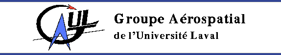
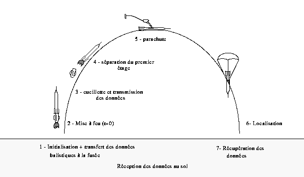
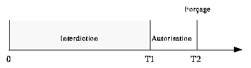

Le GAUL (Groupe Aérospatial de l'Université Laval) est un groupe principalement composé d'étudiants en génie mécanique, génie électrique, génie informatique et génie physique de l'Université Laval dont la mission est de mettre leurs connaissances au profit de l'aérospatial. Jusqu'à ce jour, nous avons mis au point deux fusées expérimentales de haute altitude. La première, du nom d'Orion, fut lancée à l'été 1994. Étant à ce moment à nos premières armes, notre fusée n'obtint pas les résultats escomptés. Par contre, le lancement de notre deuxième fusée, Artémis, effectué l'année dernière fut un succès à tous les niveaux. De plus, le GAUL a une fois de plus eu l'occasion de se faire connaître lors d`une campagne de lancement organisée par l'Agence de Recherche et de Développement de l'Aérospatial Amateur (ARDAA) à Rosemère en octobre 1995. Nous avons eu l'occasion de fournir l'électronique et la charge utile pour une fusée expérimentale de basse altitude.
Nos deux premiers lancements ont eu lieu en France au Festival de l'Espace organisé par l'Association Science Technique Jeunesse (ANSTJ) en collaboration avec le Centre National d'Études Spatiales (CNES). Cette année, nous désirons concevoir une nouvelle fusée du nom d'Apollon. Elle nous permettra de tester une séparation du premier étage en vu, lors d'une année subséquente, d'une propulsion faite par un deuxième étage. Dans le pages qui suivent, nous vous exposons les grandes lignes du projet Apollon.
La fusée Apollon est la suite immédiate à Artémis. Par contre, elle comportera plusieurs innovations telles que l'ajout d'un étage et l'amélioration de l'électronique. De plus, elle devra effectuer un vol de plus haute altitude que ses prédécesseurs. Elle aura plusieurs tâches: libérer son deuxième étage après la combustion complète du propulseur, déployer par elle-même son parachute lorsqu'elle sera rendue à son point de culmination, cueillir des données physiques au cours de son envolée, les emmagasiner en mémoire, les transmettre au sol par voie hertzienne afin de les visualiser en temps réel et les retransmettre directement à un ordinateur personnel lors de la récupération de la fusée. Sur la figure 1, nous illustrons les différentes phases de la fusée lors de son vol.

La structure mécanique de la fusée expérimentale est divisée en deux étages, chacune à son tour divisée en niveaux ayant un rôle spécifique à jouer. Tous les niveaux sont divisés par un joint inter-niveau qui leur sont propre.
Le premier étage est composé de deux niveaux: le moteur principal et le système de récupération. Le premier moteur ne sert que pendant la première partie du décollage. Il est ensuite largué lors de la première séparation et le parachute contenu dans le niveau de récupération se déploie.
C'est dans le deuxième étage que se situe la majorité des éléments nécessaires au fonctionnement d'Apollon. On y retrouve le deuxième moteur, son niveau récupération, le niveau électronique et le niveau télémesure.
La structure interne, que l'on appelle aussi la porteuse, sera composée de deux poutres centrales reliant les joints inter-niveaux entre eux. Ces pièces seront faites en aluminium. Toute cette structure interne sera enveloppée par un fuselage composé soit d'aluminium, ou de fibre de carbone. Pour faciliter l'accès à l'instrumentation interne de la fusée, le fuselage sera divisé en demi-cylindres pouvant être retirés lorsque nécessaire.
Ces deux niveaux ont une configuration bien particulière. En effet, ce niveau, composé du moteur et du carburant, a un diamètre inférieur au reste de la fusée. Cette partie, que l'on appelle niveau moteur, est insérée dans le joint inter-niveau ou le "joint moteur". Pour conserver le profil aérodynamique de la fusée, le moteur sera recouvert d'un cylindre qui est le prolongement du fuselage des niveaux supérieurs. C'est à ce niveau que seront fixés les ailerons servant à stabiliser la fusée au cours du vol. Le propulseur utilisé sera le CRV-7, dont les caractéristiques sont illustrés au tableau 1.
| 1. Masse | 6,4 kg |
| 2. Masse moteur + fusée | 20 kg |
| 3. Temps de combustion | 2,2 s |
| 4. Poussée maximale | 7100 N |
| 5. Impulsion totale | 10315 N·s |
Le deuxième niveau moteur contiendra, pour cette année, une caméra pour la prise d'images durant le vol.
La fonction principale de ce troisième niveau est la récupération de la fusée. C'est dans cette section qu'est situé le parachute de récupération. L'éjection du parachute se fera par une porte latérale. Le système d'éjection est assez simple: lorsque la fusée est au sommet de sa courbe, l'ordinateur de vol envoie un signal à une goupille pyrotechnique qui commande l'ouverture de la porte latérale. À cet instant, le parachute est déployé.
C'est à ce niveau que l'on trouve les principales composantes électroniques. Les cartes électroniques sont empilées une par dessus les autres à la verticale, économisant beaucoup d'espace ainsi. De plus, des instruments nécessaires aux expériences faites en cours de vol (voir section 2.3) seront installés dans ce niveau. On y retrouve l'ordinateur de vol, les séquenceurs, la carte des capteurs et le panneau de contrôle de l'instrumentation électronique. Ce dernier est placé sur l'une des deux faces de l'électronique. Une porte située sur la paroi extérieure de la fusée permet d'y avoir accès facilement. Pour permettre la communication entre les niveaux, des orifices seront créés dans les joints inter-niveaux afin de pouvoir passer les câbles.
Étant le sommet de la fusée, le cinquième niveau aura une forme géométrique particulière. À ce niveau, il n'y a pas de structure centrale et le fuselage est en forme de pointe. Puisqu'il est prévisible que la fusée dépasse le mur du son, la pointe de la fusée nécessite une configuration spéciale. Cette pointe devra être de forme ogivale, conique ou parabolique. Pour des raisons de télémétrie, le fuselage du cinquième niveau ne devra pas être métallique. C'est pour cette raison que le sommet sera fait de fibre de verre ou de nylon. Ainsi, on y installera les instruments de télémesure, dont l'émetteur et l'antenne.
Quelques données techniques sur la fusée sont présentées dans le tableau 2.
| 1. Masse | 20 kg |
| 2. Longueur | 300 cm |
| 3. Diamètre | 12,7 cm |
| 4. Vitesse maximale | 450 m/s |
| 5. Accélération maximale | 350 m/s2 |
| 6. Altitude maximale | 3500 m |
| 7. Temps pour altitude maximale | 20 s |
| 8. Vitesse de descente sous le parachute | 10 m/s |
Maintenant que la visualisation de chaque niveau de la fusée est faite, nous pouvons attaquer la partie de l'électronique d'Apollon. L'électronique est présente à plusieurs niveaux. Ses principaux modules sont: l'ordinateur de vol, l'émetteur, la carte des capteurs, le(s) séquenceur(s), le panneau de contrôle et le numériseur d'images. Le bloc diagramme de l'électronique est présenté à la figure 2. Il permet de visualiser tous les liens existant entre les différents modules.

L'ordinateur de vol est le module électronique qui gère et dirige les opérations tout au long de son périple, dans les airs comme au sol. Il aura la responsabilité de prendre les acquisitions des différents capteurs, de les emmagasiner dans une mémoire et de les relayer à l'émetteur. Aussi, l'ordinateur de vol prend en note, à chaque acquisition, la phase de vol de la fusée et son état, à partir de petits détecteurs d'états. Ceci est fait afin qu'on puisse interpréter les changements brusques des données.
L'ordinateur de vol est muni du micro-contrôleur (MC68HC11), lequel est programmé pour prendre une acquisition des différents capteurs (et des détecteurs) à tous les 10 ms. Il se sert de ses convertisseurs A/N intégrés afin de convertir le signal analogique, fourni par le capteur, en une donnée numérisée sur 8 bits. Ensuite, le MC68HC11 se charge de la transférer à l'émetteur par le biais du port série et à la mémoire externe, en vue de la récupérer à la fin de l'expérience.
Aussi, l'ordinateur de vol commande la prise d'image sur le numériseur et doit assurer l'ouverture du parachute au bon moment, décision prise au moyen d'un algorithme basé sur la logique floue. Il utilise les données fournies par les capteurs (vitesse et altitude) et le temps pour ensuite les traiter et les analyser.
Au sol, avant et après le vol, il servira d'interface entre la mémoire de bord et l'ordinateur personnel. Il utilise son port série asynchrone pour communiquer avec celui du PC. Il s'en sert avant l'expérience afin de programmer les paramètres adéquats pour l'équation de logique floue (utilisés pour ouvrir le parachute). Lors du vol, l'ordinateur de vol se sert aussi de son port série afin de relayer les données à l'émetteur. À la fin de l'expérience, la communication est de nouveau rétablie afin de récupérer les données emmagasinées dans la mémoire et celle du numériseur d'images.
Le séquenceur est un petit dispositif dans la fusée qui sert de minuterie de secours pour l'ouverture du parachute. C'est lui qui détecte le décollage de la fusée et qui commande l'ampli de puissance qui fait sauter l'inflammateur, nécessaire à l'éjection de la porte retenant le parachute. Il est important que le séquenceur possède une alimentation indépendante en plus d'être isolé électriquement de tous les autres modules s'y rapportant.
Une de ses fonctions très importantes est le déclenchement externe (ordinateur de vol) du mécanisme. Ce dernier doit être géré par une fenêtre temporelle comme celle illustrée à la figure 3. Le temps zéro correspond au temps du décollage. Avant le temps T1, le séquenceur interdit tout signal externe de faire ouvrir le parachute. Entre T1 et T2, celui-ci donne l'autorisation, et à T2, il force la commande.

Le panneau de contrôle est le module qui permet à l'utilisateur de commander et d'initialiser les autres modules en plus de recevoir d'une façon visuelle des informations de ceux-ci.
De plus, il sert aussi de carte-mère en inter-reliant les signaux de tous les modules. Enfin, sa dernière fonction est de distribuer les différentes alimentations.
Le système d'acquisition d'images est constitué essentiellement d'une caméra et d'un numériseur d'images. Il sera situé dans le premier étage d'Apollon, à la place du second moteur pour cette année. Les images pourront être acquises une fois le premier étage largué.
La caméra vidéo est reliée à un numériseur d'images noir et blanc. Les images de dimension 256 x 256 sont numérisées sur 8 bits. Ce numériseur possédera sa propre mémoire de 1 Mo, ce qui permettra l'acquisition de 16 images durant le vol. Il est commandé par l'ordinateur de vol et interfacé avec le port parallèle de ce dernier.
L'émetteur est la partie électronique permettant de transmettre, par voie hertzienne, les données recueillies au récepteur se trouvant au sol. Ainsi, si par malchance un problème électrique survenait au niveau de la mémoire, aucune donnée ne serait perdue.
L'émetteur reçoit son signal du micro-contrôleur, le module en fréquence, et l'envoie dans l'air au moyen de l'antenne. Le signal à l'entrée de l'émetteur est un signal série, c'est à dire une série de 1 et de 0. Utilisant la modulation FSK, il n'a qu'à convertir les zéros en une fréquence f1, et les uns, en une autre fréquence f2. La plage de fréquence allouée est située aux alentours de 136,5 MHz et la puissance minimale requise sera de 0,3 watt.
Au sol, le récepteur capte le signal modulé et le retransforme en un signal série. La sortie sera branchée au port série de l'ordinateur personnel. Ainsi, le groupe émetteur-air-récepteur ne simule en fait qu'un câble série. Les données seront recueillies et affichées en temps réel (avec un délai de transmission) sur le moniteur de l'ordinateur.
Un récepteur mobile s'occupera de localisation l'emplacement de la fusée après son atterrissage. Il sera principalement constitué d'un circuit relié à quatre antennes. Le circuit compare le déphasage des signaux reçus de chacune des antennes et donne la direction de la fusée avec les possibilités illustrées sur la figure 4.

Nous ne pouvons pas parler d'une fusée expérimentale sans mentionner ses expériences à bord. Pour Apollon, elles sont essentiellement la séparation du premier étage, la prise d'images par caméra vidéo, la double mesure de l'altitude (mesure de l'influence de l'accélération sur les capteurs) et la mesure de la déformation de la paroi.
Les mesures d'altitude seront effectuées à l'aide de capteurs de pression de type tube de pitot. La déformation de la paroi sera connue à l'aide de jauges de déformation. Dans chaque cas, le signal fournit par les différents capteurs devra passer par un ampli différentiel, puis être filtré, pour ensuite être acheminé sous forme d'un signal analogique vers le micro-contrôleur. Celui-ci se chargera de numériser et de mémoriser les résultats afin de pouvoir les interpréter plus tard.
Enfin, plusieurs détecteurs d'états seront placés à l'intérieur de la fusée afin d'indiquer l'état de la fusée. Il y aura un capteur pour la détection du décollage, un pour la détection de l'ouverture de la porte du parachute, un pour le déploiement de celui-ci et enfin un autre pour la séparation de la case moteur.
Nous travaillons présentement à la conception d'un simulateur de données afin de tester l'algorithme de décision pour l'ouverture de la porte de la case parachute. Les données générées seront acheminées par le biais d'un port série vers la fusée. Ces données, qui simuleront ceux des capteurs en cours de vol, seront utilisées par l'algorithme et ce dernier retransmettra le résultat au PC. Il sera ainsi plus facile d'ajuster les paramètres de l'algorithme.
Les dates d'échéances de ce projet est prévue pour octobre 1996; il est donc probable que certaines données soient sujettes à des changements tandis que d'autres s'ajouteront en cours de route. Les choix des capteurs et des autres pièces électroniques et mécaniques ne sont pas encore définitifs.
Un rapport complet sera disponible à l'hiver 1997. Il comportera ainsi tous les choix finaux concernant toutes les pièces avec leurs caractéristiques. De plus, les résultats des expériences seront inclus avec les graphiques reliés aux différents capteurs. Une interprétation concernant les variations de ces courbes par rapport aux changements d'états sera justifiée. Enfin, les recommandations pour les prochaines fusée expérimentales seront discutées afin d'améliorer leurs résultats.